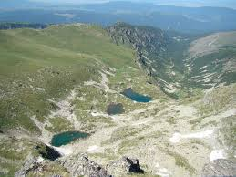

|  |
Едни от най-красивите езера в този дял са деветте Мальовишки езера, разделени в три отделни групи терасовидно из Мальовишката долина. Северно от връх Камилата са трите Маломальовишки езера. В дъното на Мальовишката долина във висок циркус са трите Еленини езера. Под североизточната стена на в. Мальовица, западно от върховете Малка Мальовица и Орлето и източно от Ушите, в малък циркус се гушат останалите три езера за които се запази старото общо име Мальовишките езера. От тия езера започват пенливи планински потоци и образуват река Мальовица.
|